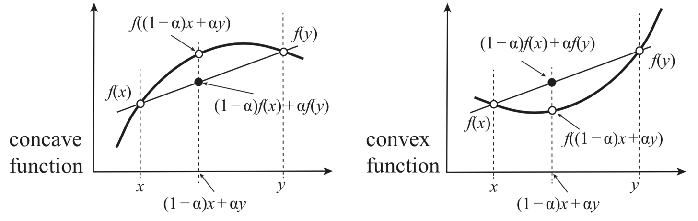

Legendre transform#
import matplotlib.pyplot as plt
import numpy as np
import scipy as sci
from ipywidgets import widgets
Convexity of Entropy and Concavity of Energy#
Entropy \(S(E,V,N)\) of a composite system is additive over each one of the individual components. The entropy is therefore continuous, differentiable, and monotonically increasing function of the energy \(S(E)\)

To sum up we have the follwing fundamental properties that any Entropy as a function of extensive variables should obey:
\(S(\alpha E + (1-\alpha) E^{'}, \alpha V + (1-\alpha) V^{'}) \geq \alpha S_1 (E, V) +(1-\alpha) S_2(E^{'}, V^{'})\)
\(S(\lambda E,\lambda V, \lambda N) = \lambda S(E,V,N)\)
\(\frac{\partial S}{\partial E} > 0\)
\(\frac{\partial E}{\partial S} = 0,\ as\ S \rightarrow 0\)
Mathematics of Legendre Transform#
Genrally speaking legendre transform is transforming one convex function \(f(x)\) into another \(f^*(\alpha)\). Morover, the transofmraiton is involutive, meaning it is its own inverse. If we apply legendre trnsform to a function if single variable twice we get back to orginal function!

Example of Legendre transform-1#
f = lambda x: x**2
g = lambda a: a*(a/2) - f(a/2) # deriv f(x) = 2x = a ---> x = a/2
@widgets.interact(a=(0,2,0.2))
def legendre_transf(a):
fig,ax =plt.subplots(nrows=1,ncols=2, figsize = (10,4))
x = np.linspace(0,1,100)
ax[0].plot(x,f(x),lw=3)
ax[0].plot(x, a*x-g(a),'--')
ax[0].set_title('$f(x) = x^2$')
ax[0].legend(['f(x)', f"$y = ax-g(a)$ = {a}x -{g(a):.2f}"])
ax[0].set_xlim(0,1.2)
ax[0].set_ylim(0,1.2)
ax[0].set_xlabel('x',fontsize=20)
ax[0].set_ylabel('f(x)',fontsize=20)
ax[0].grid('on')
ax[1].set_title('$g(a) = max_x [ax-f(x)]= a^2/2$')
ax[1].plot(a,g(a),'o',color='orange',ms=12)
ax[1].plot(np.linspace(0,2,10),g(np.linspace(0,2,10)),'-',lw=3, color='red')
ax[1].set_xlim(0,1.2)
ax[1].set_ylim(0,1.2)
ax[1].set_xlabel('a',fontsize=20)
ax[1].set_ylabel('g(a)',fontsize=20)
ax[1].grid('on')
Example of Legendre transform-2#
f2 = lambda x: np.exp(x)
g2 = lambda a: a*np.log(a) - f2(np.log(a)) # deriv f(x) = e^x = a ---> x = log a
@widgets.interact(a=(1,3,0.2))
def legendre_transf(a):
fig,ax =plt.subplots(nrows=1,ncols=2, figsize = (10,4))
x = np.linspace(0,1,100)
ax[0].plot(x,f2(x),lw=3)
ax[0].plot(x, a*x-g2(a),'--')
ax[0].set_title('$f(x) = x^2$')
ax[0].legend(['f(x)', f"$y = ax-g(a)$ = {a:.2f}x-{g2(a):.2f}"])
ax[0].set_xlim(0,1.2)
ax[0].set_ylim(0,3)
ax[0].set_xlabel('x',fontsize=20)
ax[0].set_ylabel('f(x)',fontsize=20)
ax[0].grid('on')
ax[1].set_title('$g(a) = max_x [ax-f(x)]= a(log a-1)$')
ax[1].plot(a,g(a),'o',color='orange',ms=12)
ax[1].plot(np.linspace(0,3,10),g(np.linspace(0,3,10)),'-',lw=3, color='red')
ax[1].set_xlim(0,3)
ax[1].set_ylim(0,3)
ax[1].set_xlabel('a',fontsize=20)
ax[1].set_ylabel('g(a)',fontsize=20)
ax[1].grid('on')
Legendre Transform numerically#
def legendre_transf(f, a=1, guess_0=0):
'''Legendre transform function f to g
INPUT:
f <-- function
a <-- value of new variable
OUTPUT:
g(a) = min_x[a*x-f(x)] legendre transform at point a
'''
min_x, = sci.optimize.fmin(lambda x: f(x)-a*x, guess_0)
return a*min_x - f(min_x)
f = lambda x: x**2+x**4
#g = [legendre_transf(f, a) for a in np.linspace(0,1,100)]